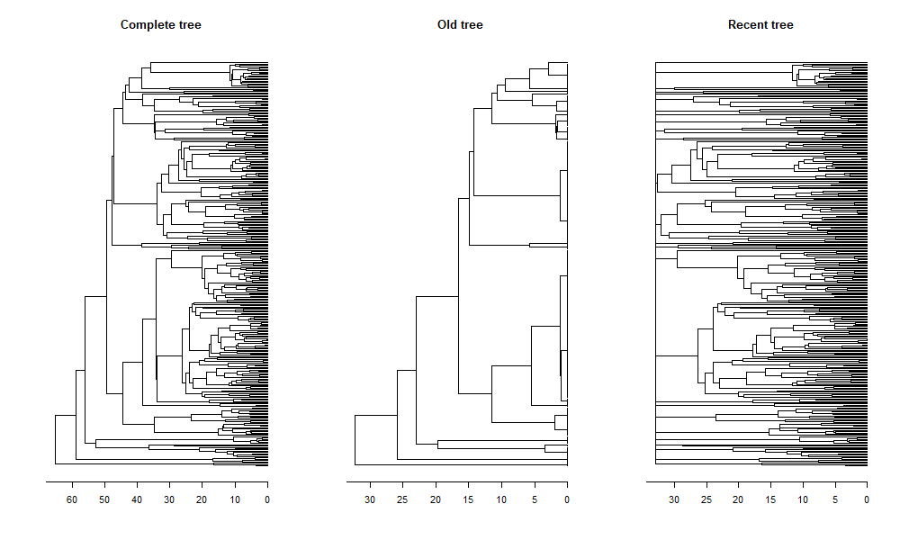
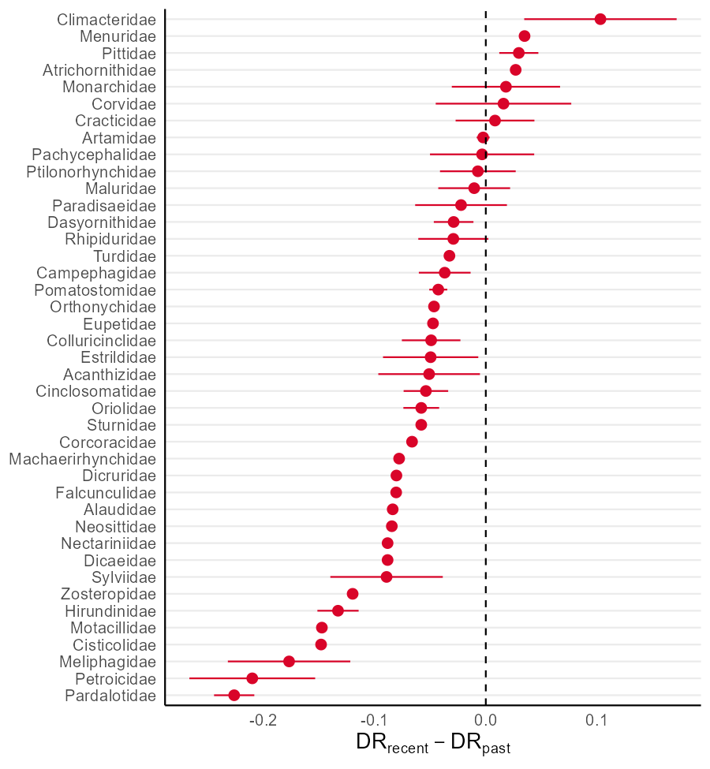
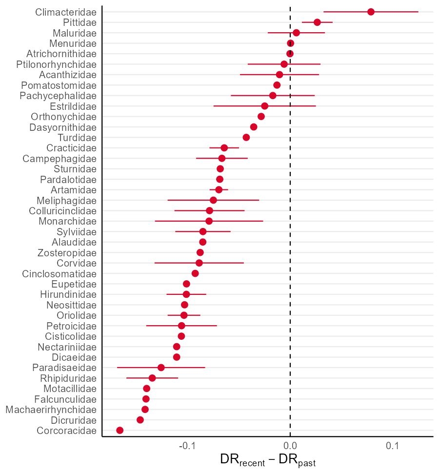

Passerines Diversification
Source:vignettes/Passeriformes-diversification.Rmd
Passeriformes-diversification.RmdThis article aims to replicate the case study developed by Araujo et al. (in review). We will also present the workflow executed within the study for both a single passerine phylogeny and multiple passerine phylogenies, in order to control the results for phylogenetic uncertainty Rangel et al. (2015).
Before starting our analysis, we’ll need to load the
ape, ggplot2, and ggpubr
packages. Additionally, if required, install the devtools
to invoke the treesliceR package:
# Creating a list of our desired packages
libs <- c("ape", "devtools", "ggplot2", "ggpubr")
# Checking if they're installed
if (!requireNamespace(libs, quietly = TRUE)){
install.packages(libs)
}
# Loading them
library(ape)
library(ggplot2)
library(ggpubr)Now, we’ll need to load (and install if necessary) the
treesliceR package:
# Is it already present within the machine?
if (!requireNamespace("treesliceR", quietly = TRUE)){
devtools::install_github("AraujoMat/treesliceR")
}
# Loading it
library(treesliceR)1. Passerines study for a single phylogeny
1.1. First framework example
Herein, we’ll compare the passerines tip diversification rates (DR) before and after the Australian aridification (~33 Mya). Our used passerines phylogenies are subsets of the global birds phylogenies made available by Jetz et al. (2012).
Thus, primarily, we can load the passerines phylogeny available
within the package by calling the pass_trees object:
tree <- pass_trees[[1]]Now, we need to split the phylogeny into two distinct portions, one
representing the last 33 millions of years ago (Mya) and another
representing the cladogenesis events before this period. To capture the
root slice before 33 Mya, we can slice our phylogeny tipwardly (i.e.,
from tips to root) using the squeeze_tips() function.
Alternatively, the phylogeny slice of the last 33 Mya can be obtained
through the squeeze_root() function, which slices a
phylogeny rootwardly (i.e, from root to tips).
Since DR calculations are dependent on the node’s path to a given
tip, we set the argument dropNodes = TRUE in our functions
to remove those “void nodes” (nodes with zero branch length) to avoid
biases in our DR estimates:
recent <- squeeze_root(tree = tree, time = 33, dropNodes = T)
old <- squeeze_tips(tree = tree, time = 33, dropNodes = T)Let’s compare our original phylogeny with those cut ones:
par(mfrow = c(1, 3)) # Setting an 1x3 graphical display
plot(tree, main = "Complete tree", show.tip.label = F); axisPhylo()
plot(old, main = "Old tree", show.tip.label = F); axisPhylo()
plot(recent, main = "Recent tree", show.tip.label = F); axisPhylo()
par(mfrow = c(1, 1)) # Returning to a simple 1x1 display
Then, we need to calculate the DR separately for each phylogeny slice
while finding the difference between them. To calculate the DR, we can
use the DR() function available within the
treesliceR package:
Now we’ll assign these DR differences to a data frame inside our tree object containing passerines information:
tree$Species_info$DR_diff <- DR_diffTo calculate the mean and standard deviation differences per family,
we use the tapply() function to aggregate the calculated
DRs by passerine families:
# tapply() for means
fam_DR <- tapply(tree$Species_info$DR_diff, tree$Species_info$Family, mean)
# tapply() for standard deviations
fam_DR_sd <- tapply(tree$Species_info$DR_diff, tree$Species_info$Family, sd)To visualize DR differences among families, we’ll create a new data frame with our outputs:
# Creating the families DR data frame
fam_df <- data.frame(Family = names(fam_DR), DR_diff = fam_DR, DR_sd = fam_DR_sd)
# Sorting them based on DR's value
fam_df <- fam_df[order(fam_df$DR_diff),]
# Turning this order into a factor to plot it
fam_df$Family <- factor(fam_df$Family, levels = fam_df$Family)Now, we can create a graph similar to the one displayed in Araujo et al. (in review) using the ggplot2
package:
ggplot(fam_df, aes(x = Family, y = DR_diff,
ymin = DR_diff - DR_sd,
ymax = DR_diff + DR_sd)) +
geom_pointrange(color = "#d90429") +
geom_hline(yintercept = 0, linetype="dashed", color = "black") +
coord_flip() + theme_minimal() +
theme(axis.title = element_text(size = 13),
axis.text = element_text(size = 10),
axis.line = element_line(colour = "black"),
panel.grid.major.x = element_blank(),
panel.grid.minor.x = element_blank()) +
ylab(expression(paste(DR["recent"]-DR["past"]))) + xlab(NULL)
Notice that the final output is slightly different from what was observed in Araujo et al. (in review). However, remember that here we executed the analysis only for a single passerine phylogeny. A more comprehensive assessment using all phylogenies could be carried out in the sections below (for example in the section “2. Passerines study for multiple phylogenies”).
1.2. Second framework example
Herein, we’ll calculate the CpB-rate of Australian passerines for
both turnover and nestedness components. Firstly,
we’ll need to load the assemblages paired with their respective
neighborhoods. These assemblages are stored within the package in an
intern object called pass_asb. This object is a list of
presence-absences matrices, where each list contains a given Australian
focal cell and its respective neighboring cells. So, let’s check the
header of the first matrix within the list, focusing on the first four
columns (or species):
head(pass_asb[[1]][, 1:4])
#> Myzomela_obscura Dicaeum_hirundinaceum Hirundo_nigricans Artamus_personatus
#> 6 1 1 1 1
#> 5 1 1 1 1
#> 7 1 1 1 1
#> 16 1 1 1 1
#> 17 1 1 1 1
#> 18 1 1 1 1We can run some sensitivity analysis to find the most parsimonious number of slices to assess the CpB-rate patterns. But first, we need to create a vector containing our desired number of slices for assessment:
vec <- c(250, 500, 750, 1000, 1250, 1500, 1750, 2000)Let’s run the sensitivity analysis for both turnover and nestedness components:
sens_turn <- CpR_sensitivity(tree = tree, vec = vec, samp = 100,
asb = pass_asb, rate = "CpB", comp = "turnover")
sens_nest <- CpR_sensitivity(tree = tree, vec = vec, samp = 100,
asb = pass_asb, rate = "CpB", comp = "nestedness")So, we can visualize our sensitivity analysis using the
CpR_sensitivity_plot function. We use the
ggplot2 syntax to add a vertical line showing our selected
number of slices to run our subsequent analysis:
# Store each graph within a respective object
turn_sens_plot <- CpR_sensitivity_plot(sens_turn, rate = "CpB", stc = "mean") +
geom_vline(xintercept = 1000, linetype="dashed", color = "black")
nest_sens_plot <- CpR_sensitivity_plot(sens_nest, rate = "CpB", stc = "mean") +
geom_vline(xintercept = 1000, linetype="dashed", color = "black")
# To plot them together
ggarrange(turn_sens_plot, nest_sens_plot,
labels = c("a)", "b)"), ncol = 2, nrow = 1)
Now, we can finally calculate the CpB-rates for turnover and nestedness components, in this case, under a multisite approach (PS: this may take a few minutes):
# For turnover component
turn <- CpB(tree = tree, n = 1000, asb = pass_asb, comp = "turnover")
# For nestedness component
nest <- CpB(tree = tree, n = 1000, asb = pass_asb, comp = "nestedness")Finally, we can plot these CpB over time and map them. To map them,
we’ll use an Australian grid map stored within our package in the object
AU_grid. Let’s plot these patterns for the turnover
component:
turn_1 <- CpR_graph(data = turn, rate = "CpB", qtl = TRUE)
turn_2 <- CpR_graph(data = turn, rate = "CpB", qtl = TRUE, map = AU_grid)
# To plot them together
ggarrange(turn_1, turn_2,
labels = c("a)", "b)"), ncol = 2, nrow = 1)
And we can do the same for the nestedness component:
nest1 <- CpR_graph(data = nest, rate = "CpB", qtl = TRUE)
nest2 <- CpR_graph(data = nest, rate = "CpB", qtl = TRUE, map = AU_grid)
# To plot them together
ggarrange(nest1, nest2,
labels = c("a)", "b)"), ncol = 2, nrow = 1)
2. Passerines study for multiple phylogenies
2.1. First framework example
Herein, we’ll do the same as we have done in the previous section but using multiple (100) phylogenies. We’ll use all these phylogenies to control for phylogenetic uncertainty present in the position of inputted tips.
Thus, let’s firstly cut our 100 phylogenies to compare their tip-DR
before and after Australia aridification (~33Mya). This can be done
easily for our list of trees using the lapply()
function:
recent <- lapply(tree, function(x){return(squeeze_root(x, 33, dropNodes = T))})
old <- lapply(tree, function(x){return(squeeze_tips(x, 33, dropNodes = T))})In the same way, we can calculate their species DR separately using the same function:
Once the DRs are calculated, we can capture their mean values per species. However, since species positions are generally different among the phylogenies, we’ll need to merge the lists based on the species column:
# Recent
f_DRrec <- DR_rec[[1]]
colnames(f_DRrec)[2] <- 1
# Old
f_DRold <- DR_old[[1]]
colnames(f_DRold)[2] <- 1
# Looping
for (i in 2:length(DR_rec)) {
# Recent
f_DRrec <- merge(f_DRrec, DR_rec[[i]], by = "Species", sort = FALSE)
colnames(f_DRrec)[i + 1] <- i
# Old
f_DRold <- merge(f_DRold, DR_old[[i]], by = "Species", sort = FALSE)
colnames(f_DRold)[i + 1] <- i
}Now, we can calculate the mean and standard deviation of DRs per passerine species for each phylogeny time slice. Then, calculate their mean differences as done in the first workflow for one phylogeny:
# Recent
DR_rec_mean <- apply(f_DRrec[, -1], 1, mean)
DR_rec_sd <- apply(f_DRrec[, -1], 1, sd)
# Old
DR_old_mean <- apply(f_DRold[, -1], 1, mean)
DR_old_sd <- apply(f_DRold[, -1], 1, sd)
# Capturing their mean difference
DR_diff <- DR_rec_mean - DR_old_meanAgain, we can merge these DR differences into a data frame inside our
tree object containing passerine information, and then obtain this
information per passerine family using the tapply()
function:
df <- data.frame(Specie = f_DRrec[, 1], DR_diff = DR_diff)
# Capturing families information
df <- merge(df, tree[[1]]$Species_info, by = "Specie", sort = FALSE)
## Displaying it graphically for families
fam_DR <- tapply(df$DR_diff, df$Family, mean)
fam_DR_sd <- tapply(df$DR_diff, df$Family, sd)Before plotting, we’ll create a new data frame containing our DRs per family and sort it based on the highest DR values:
fam_df <- data.frame(Family = names(fam_DR), DR_diff = fam_DR, DR_sd = fam_DR_sd)
# Ordering to plot
fam_df <- fam_df[order(fam_df$DR_diff),]
fam_df$Family <- factor(fam_df$Family, levels = fam_df$Family)Plotting it!
ggplot(fam_df, aes(x = Family, y = DR_diff,
ymin = DR_diff - DR_sd,
ymax = DR_diff + DR_sd)) +
geom_pointrange(color = "#d90429") +
geom_hline(yintercept = 0, linetype="dashed", color = "black") +
coord_flip() + theme_minimal() +
theme(axis.title = element_text(size = 13),
axis.text = element_text(size = 10),
axis.line = element_line(colour = "black"),
panel.grid.major.x = element_blank(),
panel.grid.minor.x = element_blank()) +
ylab(expression(paste(DR["recent"]-DR["past"]))) + xlab(NULL)
2.2. Second framework example
Once we have already decided on the number of slices in the previous sections (in section “1.2.”), we’ll skip the sensitivity analysis step to calculate the CpB-rates. Thus, here we’ll calculate the CpB-rate for the 100 phylogenies using our previously defined criterion of 1000 slices.
First, we’ll run the CpB-rate analysis for the
turnover component. To obtain our CpB-rates faster for
our 100 phylogenies, pay attention that we set the CpB()
function to run under parallel programming (using the argument
ncor). Before run it, you must confirm if
the number of cores set (5) is supported by your machine. Anyway, the
following function can may take some minutes to finish, but it can run
faster if you are able to set a higher number of cores:
CpB_turn <- lapply(pass_trees, function(x){
return(CpB(tree = x, n = 1000, asb = pass_asb, comp = "turnover", ncor = 5))
})Now, we capture can capture the mean of each parameter outputted in
on our list of CpB() outputs using the
sapply() function. We’ll store them within a new data frame
containing the format that our CpR_graph() is able to read
(which is the same as the CpB() output):
CpB_val <- sapply(CpB_turn, function(x){return(x[,1])})
pB_val <- sapply(CpB_turn, function(x){return(x[,2])})
pBO_val <- sapply(CpB_turn, function(x){return(x[,3])})
# Creating the new data frame
turn_100trees <- data.frame(CpB = apply(CpB_val, 1, mean),
pB = apply(pB_val, 1, mean),
pBO = apply(pBO_val, 1, mean))Plotting the CpB outputs for the turnover component:
turn_1 <- CpR_graph(data = turn_100trees, rate = "CpB", qtl = TRUE)
turn_2 <- CpR_graph(data = turn_100trees, rate = "CpB", qtl = TRUE, map = AU_grid)
# To plot them together
ggarrange(turn_1, turn_2,
labels = c("a)", "b)"), ncol = 2, nrow = 1)
Now, we’ll do the same for the nestedness component:
CpB_nest <- lapply(pass_trees, function(x){
return(CpB(tree = x, n = 1000, asb = pass_asb, comp = "nestedness", ncor = 5))
})Separating and summarizing each parameter:
CpB_val <- sapply(CpB_nest, function(x){return(x[,1])})
pB_val <- sapply(CpB_nest, function(x){return(x[,2])})
pBO_val <- sapply(CpB_nest, function(x){return(x[,3])})
# DF
nest_100trees <- data.frame(CpB = apply(CpB_val, 1, mean),
pB = apply(pB_val, 1, mean),
pBO = apply(pBO_val, 1, mean))Plotting the CpB outputs for the nestedness component:
nest_1 <- CpR_graph(data = nest_100trees, rate = "CpB", qtl = TRUE)
nest_2 <- CpR_graph(data = nest_100trees, rate = "CpB", qtl = TRUE, map = AU_grid)
# To plot them together
ggarrange(nest_1, nest_2,
labels = c("a)", "b)"), ncol = 2, nrow = 1)
That’s all folks!
References
Jetz, W., Thomas, G. H., Joy, J. B., Hartmann, K. and Mooers, A. O. 2012. The global diversity of birds in space and time. - Nature 491(7424): 444–448. https://doi.org/10.1038/nature11631
Rangel, T. F., Colwell, R. K., Graves, G. R., Fučíková, K., Rahbek, C. and Diniz-Filho, J. A. F. 2015. Phylogenetic uncertainty revisited: Implications for ecological analyses. - Evolution 69(5): 1301–1312. https://doi.org/10.1111/evo.12644